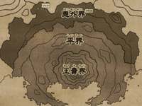
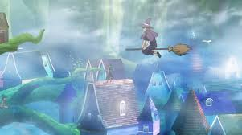
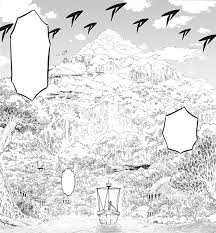
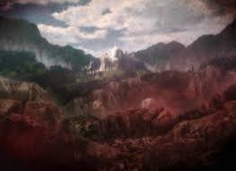

Reino de CloverO Reino Clover é um dos quatro principais países apresentados na série e onde se passa a trama principal. É também o país de origem do Mago Imperador e a Ordem dos Cavaleiros Mágicos. Atualmente é governado pelo monarca Augustus Kira Clover XIII.  |
|---|
Floresta das BruxasFloresta das Bruxas é um país pequeno e independente localizado em uma zona neutra a leste do Reino Clover e a oeste do Reino Diamond.A região é governada inteiramente pela Rainha das Bruxas.  |
Reino de SpadeO Reino Spade é um país perto dos Reinos Clover, Diamond e Heart.O governo do Reino Spade também é único em comparação com seus vizinhos. Em vez de ser governado por um monarca singular, como um rei ou princesa, o Reino Spade é governado por três poderosos magos conhecidos como Tríade Negra. |
Reino de HeartO Reino Heart é um país que faz fronteira com o Reino Clover. É o lar de Undine, o espírito da água, que formou uma aliança com os governantes do país. A atual governante é a Princesa Lolopechka, e ela fez uma aliança com o Reino Clover para invadir o Reino Spade. O reino tem seu próprio sistema para classificar a habilidade e o talento de um mago. Ele é dividido em dez Estágios Mágicos, com o Estágio Zero no topo e o Nono Estágio na parte inferior. O próprio Reino possui cinco Guardiões Espirituais que são classificados como Estágio Zero.  |
Reino de DiamondO Reino Diamond é o país de origem dos Oito Generais Brilhantes e o rival do Reino Clover. Diamond fica ao norte do Reino Clover. Este país de minas e terreno baldio é pobre em recursos, por isso concentra seus esforços na construção de seu exército e na invasão de outros países para roubar terras e recursos. Atualmente, o país é governado por um Rei com problemas de saúde. Através de um método desconhecido, o Estudioso Mágico Morris assumiu o controle do reino e atualmente o controla das sombras.  |